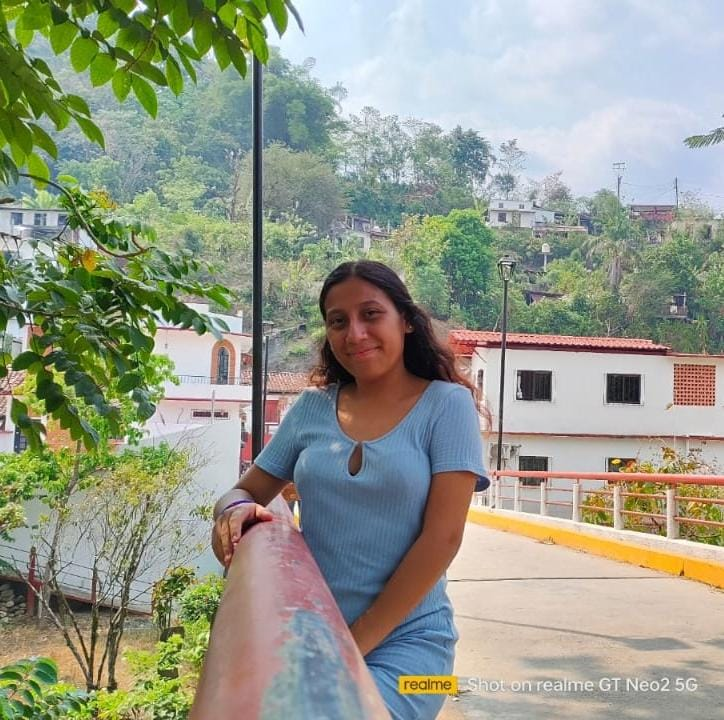

Hola, soy Valeria Vázquez.

Soy de Teapa, Tabasco y soy alumna del Instituto Tecnologíco Superior de la Región Sierra. Actualmente voy a cursar el sexto semestre de ingeniería en informática. Me gustaría profundizar más mis conocimientos y herramientas en el desarrollo web. Me gusta aprender nuevas cosas y proponerme retos de superación personal. Si yo puedo, Tu también puedes.
Desarrollo Web
He creado sitios webs responsivos aplicando los conocimientos obtenidos mediante el bootcamp de desarrollo web en Tecnolochicas Pro.
Escribir
Me encanta leer libros de informática, me gusta escribir mis experiencias sobre lo que me pasa ya sea en lo laboral y personal.
Estudiante
Soy estudiante de ingeniería informática, estoy por cursar el 6 semestre y me gusta mi carrera.


Valeria Vázquez muestra un rápido progreso en la adquisición de habilidades técnicas clave y una gran disposición para colaborar en proyectos. Su actitud positiva y su voluntad de aprender constantemente son cualidades valiosas en el campo de la programación.
Anel Montes
Tallerista de Tecnolochicas Pro

No tengo dudas de que Valeria Vázquez seguirá creciendo y haciendo contribuciones significativas como desarrolladora frontend en el futuro.
Cindy Juleidy
Estudiante de Ing. Informática

Valeria Vázquez es una persona la cuál posee un gran conocimiento a la hora de resolver problemas en con una capacidad sobresaliente de pensar de manera logica al igual que dominar de manera eficiente las cuestiones sobre desarrollo web siendo muy positiva a la hora de enfrentarte a diversas pruebas que este campo presenta.
Juan Carlos
Estudiante de Ing. Informática

Valeria Vázquez es una joven que durante los semestres que llevo como su tutora he podido ver que tiene diversas habilidades tanto blandas como duras, entre las que destacan su compromiso con su grupo, es trabajadora y busca alcanzar los objetivos que se le proponen, además pone en práctica lo aprendido en el aula de manera clara y comprensiva.
Alejandra Vázquez
Lic. en Sistemas Computacionales con Maestra en Ingeniería Administrativa